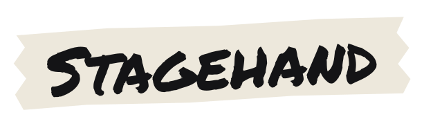
Your whole show day, in one place.
The patch, the stage boxes, the wireless, the running order and the DJ rigs. Built by a working audio engineer for live-audio crews and stage techs.
Mac · iPad · iPhone · No account. No server. Your shows stay on your devices.
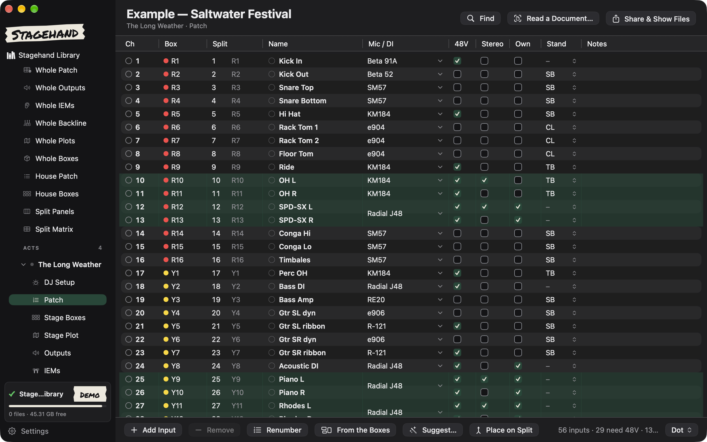
Show day
Know what happens next, all day.
The running order, set times and changeovers on one page. Every act, every stage, every day of the festival.
- Ruler or list view of the day
- Acts, changeovers, doors and curfew
- Multi-stage, multi-day festivals
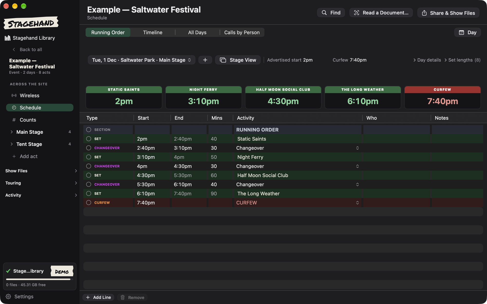
Patch and stage boxes
A real input list. Stage boxes drawn to scale.
Build the patch once. Stagehand draws every box and tells you when something does not fit.
- Mics, stands, 48V, stereo pairs and who brings it
- A warning when a socket clashes or runs past the box
- Print stage-box and IEM labels on a Brother P-touch
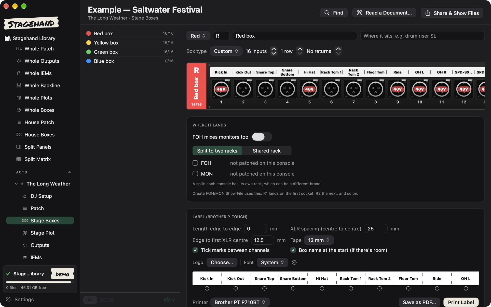
Stage View
Put the show on a screen the stage can read.
A big, clear screen for side of stage. The clock, who is on, who is next and how long is left. Run it from your laptop at front of house.
- Send one-tap messages to the stage
- Push the show late, or stop it, in one move
- Put it on a TV, a second monitor or an iPad on stage
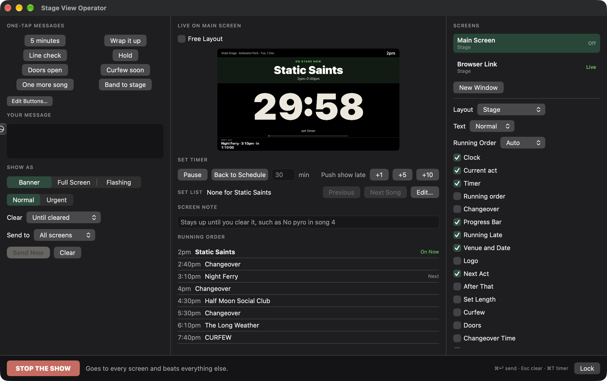
Wireless
Coordinate the RF before you load in.
Add your mics and IEMs. Stagehand finds frequencies that stay clear of each other and of what is legal where you play.
- Mic and IEM channels per act and per stage
- A live dashboard for Shure and Sennheiser receivers
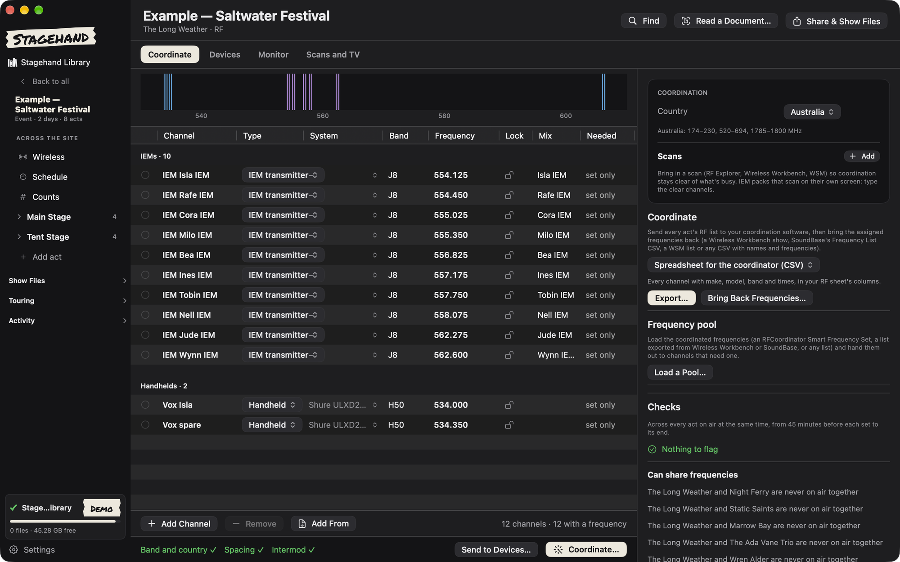
DJ sets
DJs get a real booth, not a footnote.
Bands and DJs on the same stage. Set up each booth from top-down pictures of the gear, and roll an A and B rig between sets.
- Decks, mixers and turntables drawn from above
- A and B rigs that alternate through the night
- DJ gear read from the rider, and a booth on the stage plot
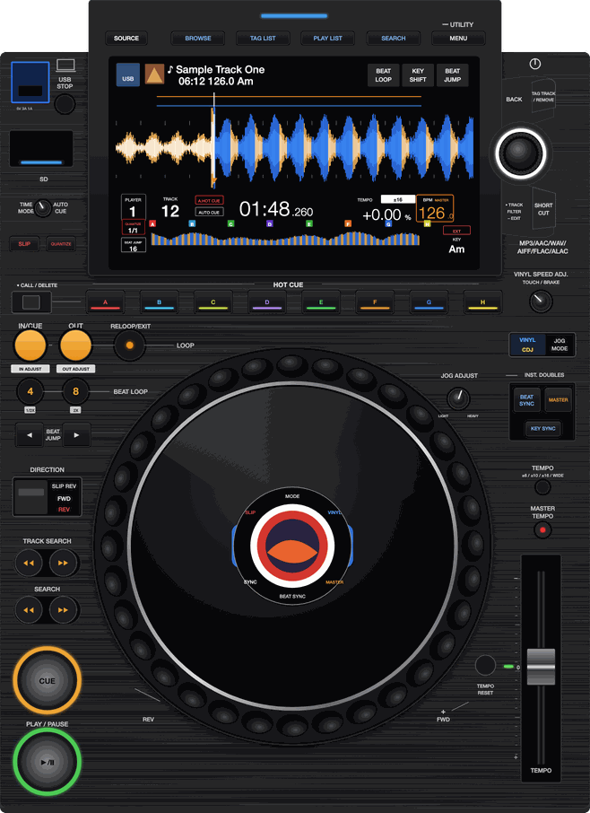
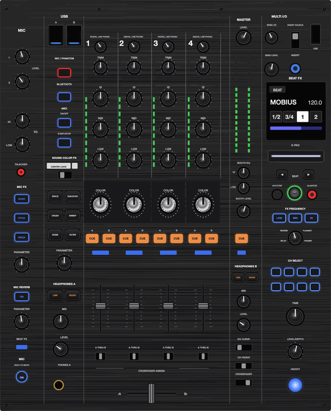
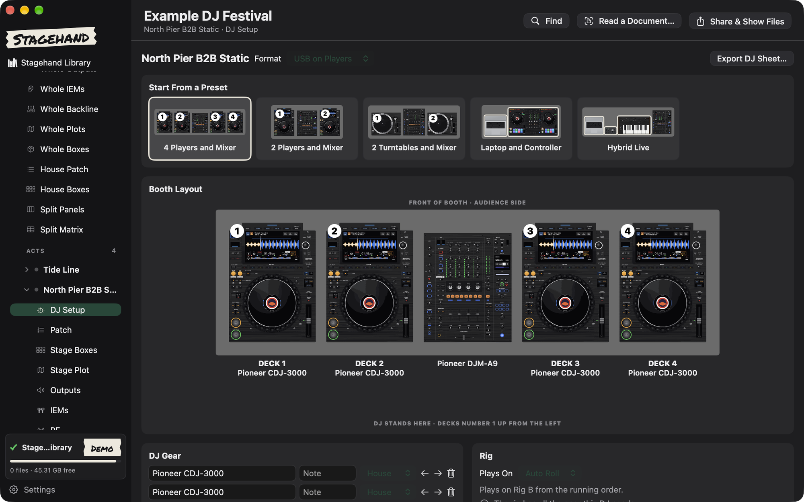
Find Anything
Press ⌘K. Type. You are there.
Jump to any page, act, patch line or mic in a second. Run actions from the same box.
- Search every act and every patch line
- Open pages without the mouse
- Find which act uses that mic
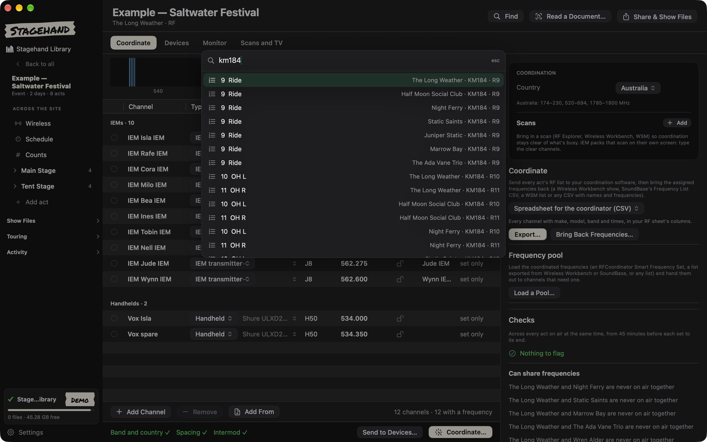
iPad and iPhone
Plan in the shop. Run it in your hand.
Build the show on the Mac. Carry it on the iPad and iPhone at the gig. Sync over local Wi-Fi, with no cloud account.
- Show day, patch, stage boxes and counts on the go
- Print labels from the iPad over Bluetooth
- Works offline, all day
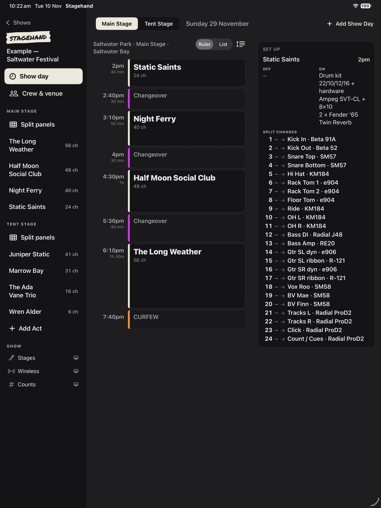
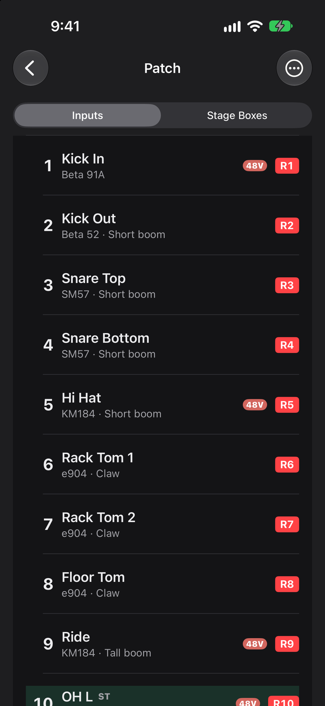
And more
The bits that save you an hour.
Read a rider
Drop in a rider, plot or schedule. Stagehand fills in the input list and counts. You check it before it is used.
Move between consoles
Convert show files between dLive, DiGiCo, Avid, Yamaha, Waves, X32/M32 and A&H SQ. In beta.
Share the advance
Send the venue one PDF or one web page. No login for them, and no server.
Beta
Join the TestFlight beta
Stagehand is free to test while it is in beta. I want to hear what works on a real show day, and what does not.
- Send me an email with the button below. Say which devices you use: Mac, iPad or iPhone.
- I add you to the beta. You get an invite from Apple TestFlight.
- Install TestFlight, open the invite and you are in.
Or write to dan@audiohawes.com.au. Use the email of your Apple ID, so the invite reaches you.